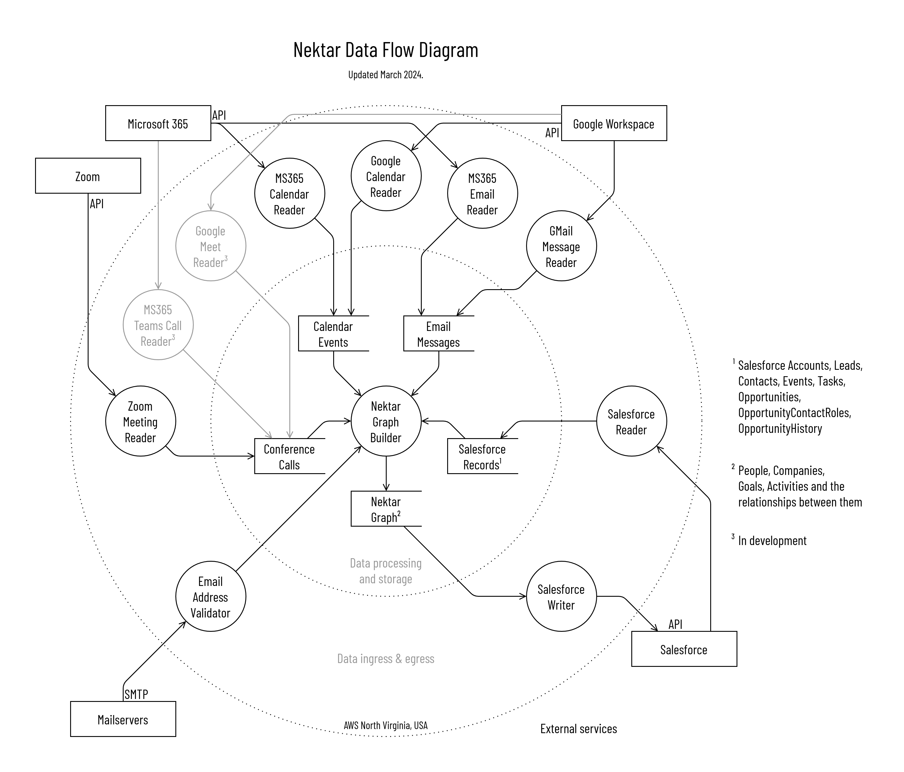

Security
SOC 2 Type II, ISO 27001, GDPR — infrastructure and encryption.

Nektar is a revenue data integration platform.
It extracts customer contact and interaction data from the communication tools used by your revenue teams (email, calendar, videoconferencing etc.) and unifies and links this data to your CRM records. This creates a complete and accurate picture of the state of your go-to-market efforts. This unified data, and any insights derived from it, are then pushed to your CRM.
Infrastructure
We use AWS infrastructure to host our applications and all data storage. Our primary AWS servers are in the USA.
Amazon provides an extensive list of compliance and regulatory assurances, including SOC 1–3 and ISO 27001. See Amazon's compliance and security documents for more detailed information.
Data retention and deletion
Our default data retention period is 90 days. This is the process we follow for data deletion from our systems.
- During normal operations. If a user deletes data from a service that is integrated with Nektar (such as Salesforce), the periodic sync job will soft-delete the Nektar copy of this data on its next run. This is the recommended workflow for handling GDPR deletion requests.
- On contract termination. After verifying your contract with us and the state of your account, we invoke an automated offboarding job that disables your organization and users and soft-deletes all your data.
- Soft-deletion marks data as deleted, but does not remove it from our database. It also causes the Nektar data fusion engine to remove any information that was derived or inferred from the deleted data. Soft-deleted data is also removed from in-memory caches and is not accessed by the Nektar application.
- Hard-deletion removes the data completely from our databases, and happens automatically 60 days after data is soft-deleted. In urgent situations, hard-deletion may be manually performed sooner. Hard-deleted data will only be present in database snapshots (backups) made prior to the deletion, which are only accessed in disaster-recovery scenarios.
- Snapshot rotation. Database backups are automatically deleted 30 days after they are created.
Data usage for AI training
Nektar will not use any customer's data to train its AI and ML models, unless there is a separate written agreement with the customer to use their data for this purpose.
Encryption
All customer data is encrypted at rest and in transit.
- Nektar encrypts data in transit using a variety of tools including:
- HTTPS (minimum standard is TLS v1.2)
- Use security certificates provided by a known, trusted provider for all of Nektar's public-facing properties on the internet
- Nektar encrypts data at rest:
- All data is stored in AWS RDS (Relational Database Service) with Encryption at Rest using AWS KMS (Key Management Service). The database has RBAC (via IAM) in place, and audit logs of queries run by any developer who has been given access to it.
Compliance
Nektar follows strict international standards and regulations to keep your information safe and is certified to be in compliance with SOC 2 Type II, ISO 27001 and the GDPR.
Our Terms and Conditions, Privacy Policy, and Data Processing Agreement (DPA) reflect our security readiness.
Data flow diagram
